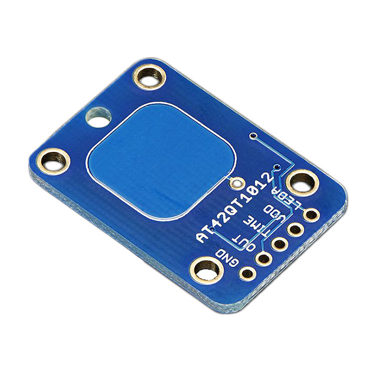
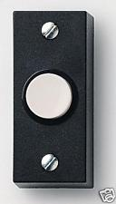

Aanraaksensor
Aanraaksensor#
Hieronder zie je een voorbeeld van een aanraaksensor, deze wordt Capacitive Touch Switch Sensor genoemd. Zodra je de sensor aanraakt wordt de output HIGH, en als je de sensor loslaat wordt de output weer LOW.
{kind=link}

Fig. 11 Aanraaksensor#
Een drukknop is ook een soort aanraaksensor. Bekijk het volgende filmpje over de drukknop.
In het filmje heb je kunnen zien dat er twee soorten drukknoppen zijn:
Normally open (NO) - als je de drukknop niet indrukt kan er geen stroom lopen
Normally closed (NC) - als je de drukknop niet indrukt kan er wel stroom lopen
{kind=link}

Fig. 12 Een deurbel is een drukknop - normally open#
Naast de Capacitive Touch Switch Sensor en de drukknop zijn er ook aanraaksensoren met een zogenaamde toggle-functie. De meeste lichtschakelaars in huis werken zo. Zo’n schakelaar staat aan (er kan stroom lopen) of uit (er kan geen stroom lopen). De schakelaar houdt dus de toestand vast ook als je de sensor niet meer aanraakt.
{kind=link}
{kind=link}
{kind=link}
Bovenstaande schakelaars hebben allemaal een toggle-functie. Ook het rechter (rode) knopje heeft dat, deze drukknop werkt dus anders dan de drukknop uit het filmpje.
Het is echter mogelijk om een drukknop zonder toggle-functie, zoals bijvoorbeeld die in het filmpje, te laten werken als een schakelaar met toggle-functie door dat te programmeren. Bijvoorbeeld, je kunt een systeem maken met een drukknop (zonder toggle-functie) en een lamp. Als je de drukknop indrukt en weer loslaat gaat de lamp aan. Doe je dat nogmaals gaat de lamp weer uit. Het systeem onthoudt dus of de lamp aan of uit moet, ook al is de drukknop niet ingedrukt. Wat dat betreft is zo’n drukknop handiger dan een schakelaar met toggle-functie. Je kunt immers softwarematig, door het programma te veranderen, het gedrag van de drukknop en het systeem als geheel aanpassen.
Als je met de Arduino werkt is het belangrijk om wat te weten over de volgende twee onderwerpen. We geven je hierbij twee bronnen, hoewel er veel meer bronnen over te vinden zijn. Werk je met de Micro:bit of Lego Mindstorms dan is dit minder relevant.
Switch Debouncing: https://www.arduino.cc/en/Tutorial/Debounce
Pull up en pull down: http://www.itela.nl/pull-up-en-pull-down-weerstand/